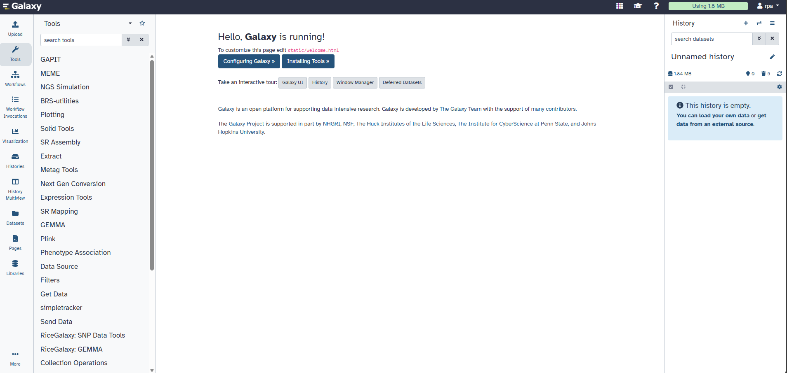
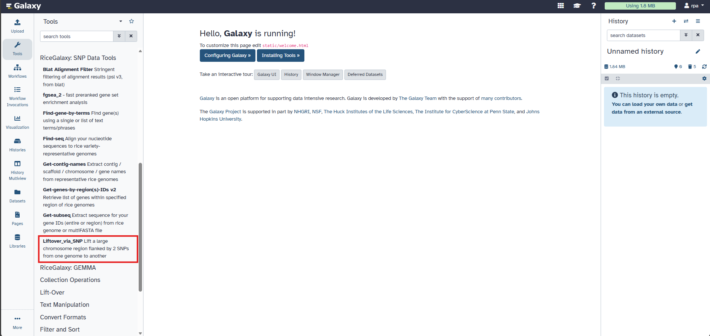

Objective
Learn how to identify candidate genes from a genomic region of interest using CropGalaxy and its integrated tools.
Preparation
Open
CropGalaxy.
You will see three main panels:
- Left panel: Available tools
- Middle panel: Analysis workspace
- Right panel: Analysis history

CropGalaxy landing page showing the three main panels
Liftover_via_SNP
This tool maps genomic regions from a source genome to a target genome using SNP-guided alignment.
- Select the RiceGalaxy: SNP Data Tools suite.
- Choose Liftover_via_SNP.
- Set parameters:
- Source genome: Nipponbare
- Coordinates: Chr02, 22001414 – 22831782
- Target genome: N22
- Click Run Tool

Liftover_via_SNP interface
Blat Alignment Filter
Filters alignment results based on identity, coverage, and mapping quality to refine genomic region mapping.
Get-genes-by-region(s) IDs v2
Extracts gene IDs located within the lifted-over genomic region.
Get-subseq
Retrieves nucleotide sequences of candidate genes for downstream functional analysis.